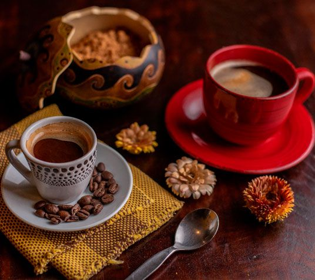
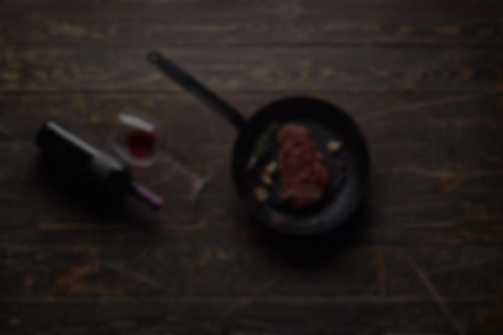

Café Fusiones · Chachapoyas, Amazonas
Hacemos de tu estadía una fusión de mística, aroma y sabor
Cafetería de especialidad en el corazón de Chachapoyas, con café cultivado en los valles de Amazonas y una carta pensada para desayunos, almuerzos y sobremesas largas.

Nosotros
Una cafetería con raíces amazónicas
Nacimos en Chachapoyas para acercar el café de los valles de Amazonas a la mesa de cada visitante. Cada taza se prepara con insumos frescos, recetas propias y el mismo cuidado con el que los productores locales cultivan el grano.
Trabajamos con opciones veganas, vegetarianas y libres de gluten en gran parte de la carta, para que cualquiera encuentre su lugar en nuestras mesas.
Trazabilidad
Del valle de Huayabamba a tu taza
Cada lote de café que servimos se identifica y se sigue desde el productor hasta la barra. Así es el recorrido de nuestro café de origen amazónico.
Galería
El local, en imágenes

Ubicación y horario
Te esperamos en Chachapoyas
- DirecciónJr. Ortiz Arrieta 779, Chachapoyas
- Lunes a sábado6:45 a. m. – 10:30 p. m.
- Domingos7:00 a. m. – 11:00 a. m. y 6:00 p. m. – 10:00 p. m.
Contacto
Escríbenos
¿Consultas, reservas para grupos o alianzas con productores? Déjanos tu mensaje y te respondemos a la brevedad.
- DirecciónJr. Ortiz Arrieta 779, Chachapoyas